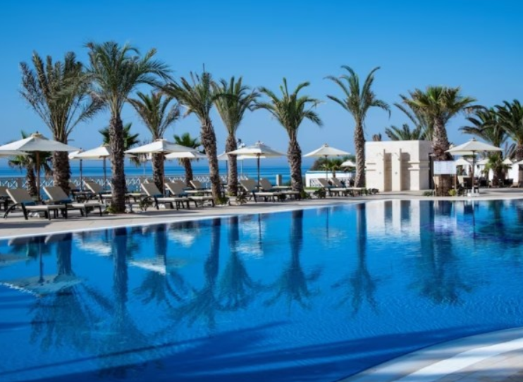

The conference is an occasion to bring together researchers in beautiful Hammamet to discuss recent developments in stochastics with applications to mathematical physics and finance.
The link of the previous conference is available
here.

List of confirmed plenary speakers
Gerardo Barrera (IST, Lisbon Portugal)
Carole Bernard (Grenoble Ecole de Management)
Fred Espen Benth (BI Norwegian Business School )
Mario Pulvirenti (Sapienza University of Rome)
List of plenary speakers we intend to invite
Giada Basile (Sapienza University of Rome)
Iulian Cîmpean (University of Bucharest)
Giovanni Conforti (École Polytechnique,Palaiseau, France)
Antoine Jacquier (Imperial College)
Abdeljabar Kandouci (Saida university Algeria)
Jonas Kremer
Anna Kwossek (University of Vienna)
Tom Lindstrøm (University of Oslo)
Afif Masmoudi (University of Sfax)
Gilles Pages (Sorbonne university)
Atena Picarelli (University of Verona)
Mario Pulvirenti (Universita Roma, La Sapienza)
Francesco Russo (ENSTA, Paris)
Kohei Suzuki (Durham University)
Jia Jie Zhu (KTH)
List of invited speakers we intend to invite
Héni Abidi (ESB university)
Dario Benedetto (Sapienza University of Rome)
Lamia Ben Othman (Tunis El Manar University)
Lorenzo Bertini (Sapienza University of Rome)
Dorsaf Chérif (Carthage University)
Christa Cuchiero (Vienna University)
Purba Das (Mathematical Institute, University of Oxford)
Griselda Deelstra (Université libre de Bruxelles)
Mhamed Gaigi (Tunis El Manar University)
Soumaya Gheryani (Tunis El Manar University)
Martin Grothaus (University Kaiserslautern)
Souheyl Jendoubi (Tunis El Manar University)
Tobias Kuna (University of Reading)
Achref Lamjid (ESPRIT University)
Mohamed Louriki (Cadi Ayyad University)
Mohamed Mnif (Tunis El Manar University)
Rahma Yasmine Moulay Hachemi (University of Saida, Algeria)